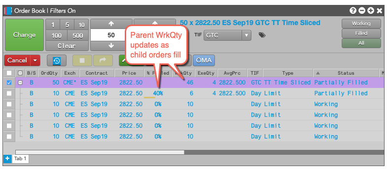
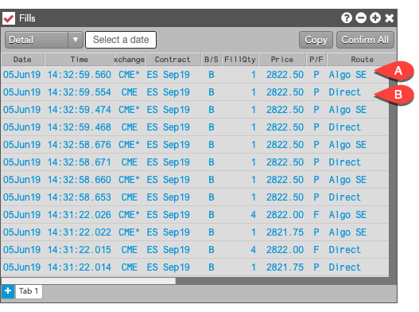
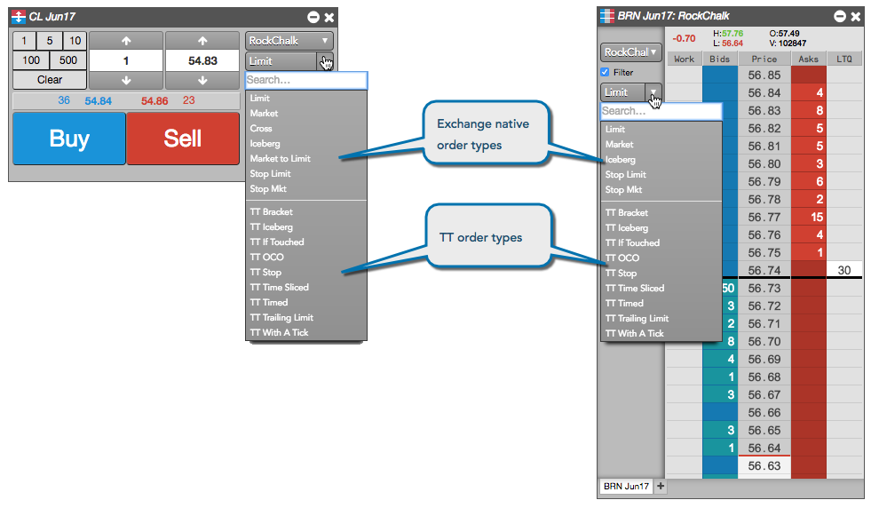
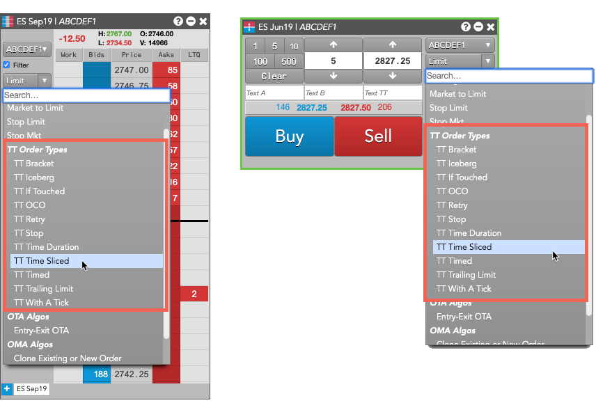
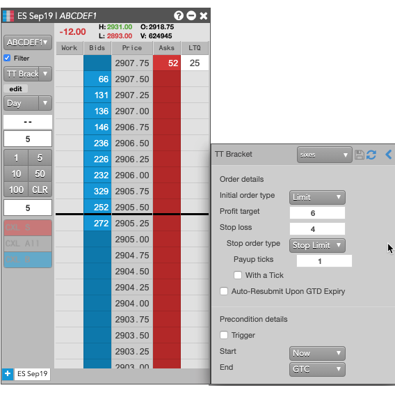
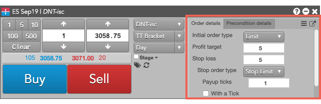
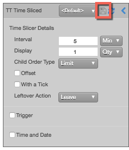
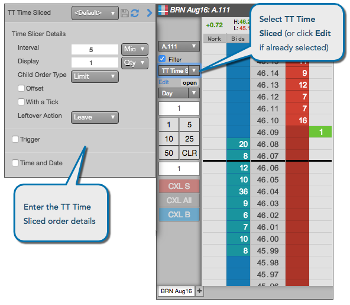
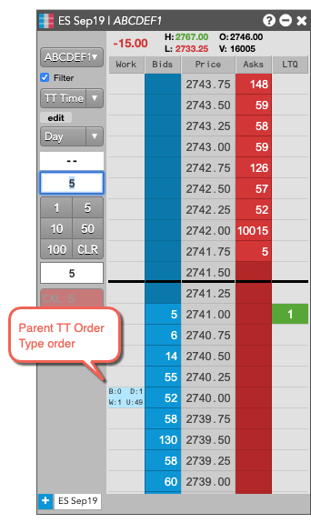

What is a TT Order Type?
A TT Order Type order is a synthetic order that manages the submission and execution of other orders in the market. TT Order Types provide more robust order execution functionality than exchanges support natively. They offer order types not supported by exchanges or provide more options than exchange-native order types provide. TT Order Types offer the following features:
-
Slicing large quantity orders into several smaller-quantity orders
-
Entering orders in response to specific market conditions
-
Scheduling orders to begin or end at a specific time
-
Repricing orders based on desired market conditions
A TT Order Type order comprises two parts:
-
A synthetic parent order that runs on an Algo Server co-located with the exchange on which the instrument trades. The parent order manages the entry and execution of its child orders.
-
Native child orders that are sent to an exchange for order execution based on the selected TT Order Type and its configuration parameters.
Available TT Order Types
| TT Order Type |
Description |
| TT Bracket |
Submits a Limit or Stop order that, upon execution, triggers an OCO (one-cancels-other) order |
| TT Iceberg |
Executes a large volume order by breaking it into smaller disclosed orders, submitting them one at a time until the total order quantity if filled. The next child order is entered only after the current child order is fully-filled. |
| TT If-Touched |
Triggers an order when the market has reached or penetrated a specified price better than the current market. |
| TT OCO |
Submits two orders of the same quantity at different price levels on the same side of the market, cancel one as the other is filled. |
| TT Retry |
Continues to submit the child order until it is accepted by the exchange or until it is rejected a specified number of times. |
| TT Stop |
Triggers an order when the market has reached or penetrated a price worse than the current market. |
| TT Time Duration |
Works a large quantity order for a set period of time, submitting smaller disclosed order portions at regular intervals based on a total time desired to achieve the total goal quantity. |
| TT Time Sliced |
Slices a large quantity order into smaller disclosed orders and submits them at fixed time intervals. |
| TT Timed |
Submits an order at a specific time and works the order until a specfied time is reached. |
| TT Trailing Limit |
Submits an order to the exchange at a specified number of ticks away from the market. |
| TT With A Tick |
Submits a limit order that that is automatically repriced one tick towards the market based on the price and quantity of the opposite inside market. |
| TT Autohedger |
Automatically submits an underlying hedge order for a filled options outright or spread/strategy order |
| TT OBV |
Enters an order for an options contract by based on a desired volatility. |
{% comment %}
{% endcomment %}
TT Order Type order lifecycle
The basic lifecycle for a TT Order Type order is as follows:
-
When creating an order, a TT Order Type is selected within an order-entry widget and its parameter values are specified in the order type fly-out.
-
A TT Order Type order is submitted from the TT platform.
-
A synthetic parent order is created for the TT Order Type on an Algo Server co-located with the exchange.
-
The synthetic parent order submits child orders to the market as dictated by the specific TT Order Type.
In the Order Book, the parent synthetic order is listed, followed by each of the child orders it sumbitted. In this example, the Order Book shows the parent TT Time Sliced order and the exchange-native child orders it manages.

-
A: TT Time Sliced synthetic parent order. Notice the Exch column shows CME*, which indicates the parent order is running on an Algo Server co-located with the CME exchange.
-
B: Child orders managed by the TT Time Sliced synthetic parent order, along with the order type and status for each child order.
-
C: The Type of the parent order matches the name of the specified TT Order Type.
-
D: By default, a TT Order Type parent is submitted with TIF=GTC.
-
As fills for the child orders are received, the parent order updates its working and filled quantities.

-
It also sends the fill acknowledgments back to TT to order entry and order management widgets, such as MD Trader and Audit Trail.

-
A. Parent order fill
-
B. Child order fill
Note: When filled, a synthetic parent fill is reported for every native child order fill.
-
When all of the child orders have finished working, the parent TT Order Type order is fully-filled and is removed from the Algo Server.
Accessing TT Order Types
You can access TT Order Types in two ways: you can select a TT Order Type from the Order Type drop-down in the MD Trader or Order Ticket widgets.


{% comment %}
{% endcomment %}
Configuring TT Order Type orders
Each TT Order Type displays a fly-out with its associated parameters when selected as the order type. You can enter the desired parameter values as well as save them as re-usable templates.

When using the Order Ticket, the parameters are displayed in an embedded panel. Based on the TT Order type, the panel might include tabs for additional parameters. For example, the following shows a fly-out dialog for a TT Bracket order type.

Note: You can click to display the available templates and to display all of the parameters in a flyout.
{% comment %}

{% endcomment %}
Placing a TT Order Type order
To enter a TT Order Type order:
- In the MD Trader® or Order Ticket widget, choose the contract to trade.
- Enter the desired order quantity and price for the order.
- Select the desired TT Order Type from the order type drop-down.

- Enter the desired child order parameters.
- Specify the desired parent order parameters.
- Click OK to close the parameters dialog.
-
Specify the TIF for the exchange-native child orders submitted by the TT Order Type parent order.
Note: If you specify a TIF (time-in-force) for the child orders that the exchange does not support, the parent order will be immediately rejected instead of when the first child order is submitted.
-
Click Buy or Sell to submit the order.
The parent order is added to the widget.

{% comment %}
Order templates
For each TT Order Type, you can save frequently-used sets of parameters by creating order templates. These templates can be selected from the drop-down to populate the order parameter fields with the saved values.


The template drop-down menu also lets you specify a default template (indicated by the yellow star) that will appear pre-selected every time you select the associated TT Order Type.
You can revert to the default system settings by selecting the <none> option.
{% endcomment %}